IoC Container
CI-1330 Tarea Programada I: Inversion of Control
Manual de uso para XML
Si se desea utilizar Inversion of Control utilizando XML únicamente, debe seguir los siguientes pasos:
- Crear un archivo XML dentro de la carpeta "resources" del proyecto correspondiente
- Cree los beans dentro del archivo XML como en el siguiente ejemplo: beans.xml
- Cree un "BeanFactoryContainer" que reciba de parámetro el path del archivo XML creado, de la siguiente forma:
- Para obtener una instancia utilice la función getBean("nombre del bean"), de la siguiente forma:
- Para destruir una instancia del contenedor utilice la función destroyBean("nombre del bean"), de la siguiente forma:


Reglas de uso del XML
- Al inicio del archivo XML ingrese la versión de este y la manera de codificación, por ejemplo: 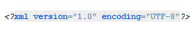
- Ingrese un tag principal de tipo "beans", en que se almacene cada uno de los bean, de la siguiente manera: 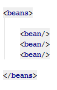
- Dentro del tag principal ingrese cada uno de los bean y sus respectivos atributos para la inyección de independencias:
El id y el classname
El "id" es un nombre único que va a tener cada bean para diferenciarse de los demás y el "classname" es el tipo de instancia que se inyectará con el respectivo bean. Ambos son estrictamente necesarios para la creación del bean, son los atributos mínimos que debe tener el tag de un bean.
Ejemplo:
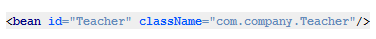Inyección por setter
Se debe poner al inicio de la dependencia un tag "
Inyección por contructor
Para cada parámetro del constructor, se debe poner al inicio de la dependencia un tag "
El autowiringMode
El atributo "autowiringMode" se utiliza para invocar a un Constructor de la clase o a algún Set de un atributo de la instancia creado. Si se desea referenciar en un Constructor se debe específicar ingresando un tag interno de tipo "constructor-args" por cada parámetro del constructor, existente. Si se desea llamar a un Set se debe ingresar el nombre del atributo a setear, que exista un método llamado Set"Nombre" y agregar un tag interno de tipo "setter-args".
Hay dos tipos de autowiring. Estos son:
autowiringMode.BYNAME
autowiringMode.BYTYPE
BYTYPE:
Este valor se obtiene por defecto si no se específica el tipo del atributo "autowiringMode".
Uso: Se crea una instancia con las características del primer bean encontrado que tenga un valor de "classname" igual al que referencia un Set o un Contructor.
Ejemplo:
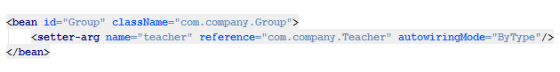BYNAME:
Uso: Se crea una instancia con las características del bean que tenga un valor de "id" igual al que referencia un Set o un Contructor.
Ejemplo:
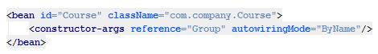Las dependencias y los tipos de "autowiringMode" se pueden mezclar dentro de un mismo bean, por ejemplo:
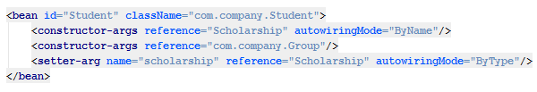El scopeType
El atributo "scopeType" se utiliza para escoger la proveniencia o independencia de la instancia que se inyecta.
Hay dos tipos de scopes. Estos son:
scopeType.SINGLETON
scopeType.PROTOTYPE
SINGLETON:
Este valor se obtiene por defecto si no se específica el tipo del atributo "scopeType".
Uso: A la hora de recuperar una instancia del bean, esta es la misma del bean que se encuentra en el Container; es decir, si un bean es de tipo "singleton" toda inyección de este compartirá la misma instancia.
Ejemplos:
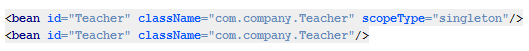PROTOTYPE:
Uso: A la hora de recuperar un instancia de bean, se devuelva una instancia nueva con las características que se insertaron inicialmente en el bean.
Ejemplo:
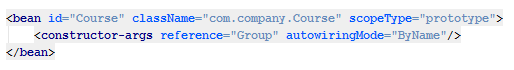El initMethod
Uso: El atributo "initMethod" se utiliza para especificar el método que se va a ejecutar una vez inyectada la instancia. Por defecto este atributo especifica a un método llamado "initMethod". Si se especifica a un método que no existe, simplemente no se ejecuta.
Ejemplo:
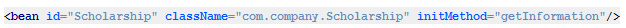El destructMethod
Uso: El atributo "destructMethod" se utiliza para especificar el método que se va a ejecutar una vez destruida la instancia. Por defecto este atributo especifica a un método llamado "destructMethod". Si se especifica a un método que no existe, simplemente no se ejecuta.
Ejemplo:
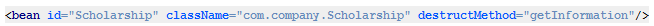El lazy
Uso: El atributo "lazy" se utiliza para especificar que no se inyecte la instancia hasta que se solicite el respectivo bean. Por defecto esta característica no está activa.
Ejemplo:
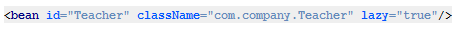Mezcla de atributos
Uso: Mientras no se ingrese más de una vez el mismo atributo dentro un mismo tag, se pueden mezclar los distintos atributos que puede tener un bean.
Ejemplos:
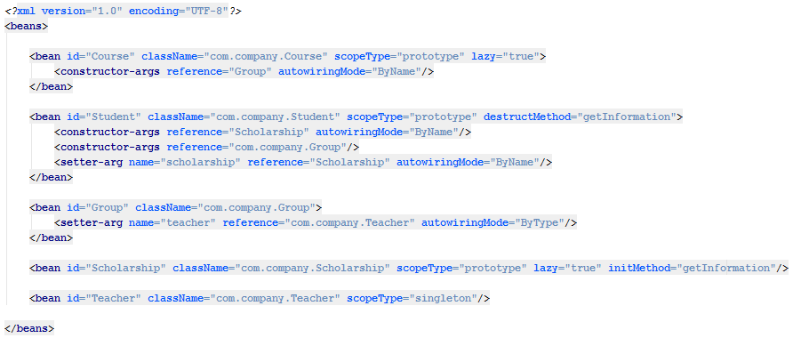Manejo de ciclos
Las dependencias no deben tener ciclos, ya que el contenedor los identifica y se descontinúan sus labores.